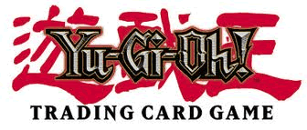

Yu-Gi-Oh! TCG is the Japanese collectible card game created by the company of Konami. This card game is based on the original game played in the Yu-Gi-Oh! Manga created by Kazuki Takahashi. The game was released in 1999, and slowly it became a worldwide card game that was played in official tournaments. These tournaments gave prices such as money and rare cards for winning during the time it became famous everywhere. Konami and UDE (Upper Deck Entertainment) cooperated together to make it happen. As this went on, the Yugioh TCG became the number 1 selling trading card game in the world in 2009; that was until the cooperative company UDE messed the deal without Konami’s permission which caused them to break apart, leaving Konami with the Yugioh TCG and going down in the ranks. Either way, Kazuki Takahashi kept making his manga and anime in Japan, which kept Konami making more cards for the card game. The “thing” that makes this game interesting is the updated cards, new effects, new spells, new monsters, new traps, new cards, new rules, thousands of different cards to play, many combinations, and more. Yugioh TCG keeps being one of the best TCG in the world. It takes strategy, logic, patience, knowledge, and math to play this card game.